Learning How Materials Age: Reproducing Dynamic Appearance with Neural ODEs
Introduction
One thing we took away from EE5311 is that differential equations do more than sit in textbooks — they describe how things actually change over time, and if you make them differentiable you can fit them to real data with gradient descent. That got us wondering: could a neural network figure out the differential equations behind something like metal rusting, just by watching it happen in a video?
Turns out, someone already tried. Neural Differential Appearance Equations (NDAE) [1] by Chen Liu and Tobias Ritschel (UCL) does exactly this. They model how materials visually change over time — rusting, decaying, cracking, weathering — as the solution of a Neural ODE trained on a single exemplar video. What makes this different from standard dynamic texture work is that those methods mostly deal with motion (think flags waving or water rippling). Here, the appearance itself is what changes: colours shift, rust spots nucleate and spread, the whole texture transforms into something unrecognizable.
There is actually a nice historical thread here. Turing showed back in 1952 [6] that biological patterns can emerge from reaction-diffusion equations. NDAE takes the same spirit but swaps the hand-designed equations for a neural network that learns the dynamics directly from data, then rolls them forward to synthesize new texture videos.
In this blog we walk through the paper's main ideas, talk about our PyTorch reimplementation (and the corners we cut), show results on several materials, and discuss what worked and what did not.
Background: Why Not Just Optimize Frame by Frame?
The obvious baseline is: just run a texture synthesis method like Gatys et al.'s Gram-loss approach [2] on each video frame independently. We actually thought about this early on. The issue is temporal coherence — each frame might look fine on its own, but stitch them together and you get rust spots teleporting around, cracks blinking in and out. Nothing ties one frame to the next, so there is no reason the evolution should look smooth or physically plausible.
Two-stream [3] tries to get around this by separating appearance from motion using optical flow. The catch is it assumes the texture's statistics do not actually change over time — fine for swaying grass, useless when metal is actively turning into rust.
Other methods have similar problems. DyNCA [5] needs a pre-trained motion network and only handles textures whose look stays roughly constant. SinFusion [7] can train on a single video but is limited to short clips without much temporal variation. Bottom line: none of these can deal with the kind of drastic visual changes you see in real material aging.
The NDAE Approach
Formulation: An ODE That Governs Appearance
NDAE's main idea is straightforward: model the changing appearance as the solution of a Neural ODE:
Here \(\mathbf{z}(t) \in \mathbb{R}^{C \times H \times W}\) is a latent state at time \(t\), and \(f_\theta\) is a UNet parameterized by \(\theta\) that predicts the instantaneous rate of change. The latent state has \(C = 12\) channels — 3 for RGB appearance and 9 "augmented" channels that the network uses freely as hidden state.
To generate appearance at any time \(t_N\), we:
- Start from random Gaussian noise \(\mathbf{z}(t_I) \sim \mathcal{N}(0, I)\)
- Integrate the ODE forward: \(\mathbf{z}(t_N) = \mathbf{z}(t_I) + \int_{t_I}^{t_N} f_\theta(\mathbf{z}(t), t)\, dt\)
- Extract the visible appearance from the first 3 channels: \(L(t) = \rho(\mathbf{z}(t))\)
If you have taken EE5311, this should look familiar — the state evolves via a differential equation, except now the equation itself is a neural network, and we learn its parameters by backpropagating through the entire forward simulation.
Two Phases: Warm-up and Generation
The ODE simulation splits into two phases:
- Warm-up \([t_I, t_S]\): The ODE converts random noise into a valid initial texture. Only the first exemplar frame supervises at \(t_S\). This is analogous to a "burn-in" period — the system organizes random initial state into a coherent pattern.
- Generation \([t_S, t_E]\): The ODE drives the texture forward, matching the evolving exemplar appearance. Each frame supervises at its corresponding time point.
The warm-up turns out to be really important. Without it, you would be asking the generation phase to start from noise, which obviously does not work well. With it, the same ODE weights learn to do two jobs: first denoise, then evolve.
Architecture: UNet for Dynamics
For \(f_\theta\) the authors use a UNet borrowed from the diffusion model literature [8]. The key design choices are:
- Encoder–decoder with skip connections (standard multi-scale stuff)
- Adaptive group normalization (AdaGN) conditioned on a sinusoidal time embedding — this is how the network knows what point in time it is at
- Self-attention at the lowest resolution for long-range spatial dependencies
- Circular padding everywhere, so the output tiles seamlessly
- Sigmoid on the output to keep values in \([0, 1]\)
Online Training Scheme (Algorithm 1)
A naive approach would integrate the full ODE from noise (\(t_I\)) to a random target (\(t_N\)) every single iteration, which is way too slow. The paper's solution is an online training scheme with a refresh rate \(R\):
For each cycle of R iterations:
Iteration 0: Sample noise z₀ at tI, solve ODE to tS, compute loss, update θ
Iteration k (k=1..R-1):
Reuse last state as new starting point
Sample target in the k-th stratified range
Solve ODE for just this short segment
Compute loss, update θ
Refresh: start a new cycle from fresh noiseBecause you reuse intermediate states instead of starting from scratch each time, the average integration cost drops by roughly \(R\times\). Setting \(R = 6\) brings training time down to something a single GPU can handle.
Loss Functions
Training happens in two stages, both using VGG-19 features:
- Init stage: Plain per-pixel MSE between the ODE output at \(t_S\) and the first exemplar frame. This just gets the model into the right ballpark — it can map noise to something that roughly looks like a texture.
- Local texture stage: Switches to Gram matrix loss + Sliced Wasserstein Distance (SWD), which compare texture statistics instead of pixel-by-pixel matches. The idea is that a good rust texture should have the right colour distribution and feature correlations, not necessarily the exact same pixel layout as the exemplar. There is also an overflow penalty to keep pixel values from blowing up.
BRDF Variant: Relightable Materials
The paper also has an extension for relightable materials, which we thought was pretty cool. The latent state grows to \(C = 9 + 9 = 18\) channels, where the first 9 are actual interpretable BRDF parameters:
| Channels | Parameter | Role |
|---|---|---|
| 1–3 | RGB diffuse albedo | Base color (Lambertian) |
| 4–6 | RGB specular albedo | Reflective tint |
| 7–8 | Anisotropic roughness | Surface micro-geometry |
| 9 | Height map | Normal perturbation |
These get fed into a differentiable Cook-Torrance renderer that can compute how the surface looks under any light/view direction. The training data is just flash-lit photos taken with a smartphone on a stand — no lab setup needed. All the known physics (GGX distribution, Fresnel, Smith geometry term) is hardcoded into the renderer; the network only has to learn the part we do not know, which is how the material properties change over time.
Our Reimplementation: From JAX to PyTorch
We decided not to just clone the authors' repo and hit run. Instead we rewrote the whole thing in PyTorch from scratch. The original code is in JAX/Equinox, which is a pretty different ecosystem, so this was not a simple find-and-replace job — we had to actually understand what every piece does, from how the ODE wrapper talks to the solver down to the differentiable renderer.
Architecture Comparison
We simplified a few things to keep the project doable within our compute and time budget:
| Aspect | Original (JAX/Equinox) | Ours (PyTorch) |
|---|---|---|
| Framework | JAX + Equinox + Diffrax | PyTorch + torchdiffeq |
| UNet depth | 3 levels | 2 levels (dim 32→64) |
| Self-attention | Yes (at lowest resolution) | Removed |
| ODE solver | Adaptive Heun (rtol/atol=1e-2) | Euler (fixed step) |
| Parameters | ~2.5M (estimated) | ~560K |
| Training | Custom JAX training loop | PyTorch + ReduceLROnPlateau |
Why 2 levels instead of 3? Honestly, the 3-level version was slow to train and kept going unstable on us. Two levels still give you multi-scale features, just with a smaller parameter count (~560K vs ~2.5M). We dropped self-attention because the \(O(n^2)\) memory cost was killing us at our training resolution — convolutions alone handle local patterns fine anyway. For the ODE solver, we went with Euler (fixed step) instead of adaptive Heun. Simpler, more predictable, but less accurate. The downside shows up when dynamics are "stiff" — if appearance changes happen abruptly, Euler's fixed steps can miss things and errors accumulate over long trajectories. You can partially compensate by using smaller steps, but that means more compute.
Code Structure
We organized everything as a proper Python package:
ndae/src/ndae/
├── models/
│ ├── unet.py # NDAEUNet: 2-level encoder-decoder with AdaGN
│ ├── odefunc.py # ODEFunction wrapper for torchdiffeq interface
│ ├── blocks.py # ConvBlock, DefaultConv2d (circular padding), Resample
│ ├── time_embedding.py # SinusoidalTimeEmbedding + TimeMLP
│ └── trajectory.py # TrajectoryModel wrapping torchdiffeq.odeint
├── training/
│ ├── trainer.py # Two-stage trainer (init MSE → local SWD)
│ ├── schedule.py # RefreshSchedule implementing Algorithm 1
│ └── solver.py # SolverConfig with Euler/adaptive Heun options
├── losses/
│ ├── objectives.py # overflow_loss, init_loss, local_loss
│ ├── swd.py # Gram matrix loss + Sliced Wasserstein Distance
│ └── perceptual.py # VGG19Features (frozen, 5 blocks)
├── rendering/
│ ├── renderer.py # Differentiable SVBRDF rendering pipeline
│ └── brdf.py # Cook-Torrance: GGX NDF, Smith G1, Fresnel Schlick
└── data/
└── exemplar.py # ExemplarDataset loading image sequencesWe wrote up documentation for every module on a MkDocs site.
Key Implementation Details
AdaGN conditioning. Each ConvBlock gets a time embedding via Adaptive Group Normalization — a sinusoidal embedding goes through an MLP to produce per-channel scale and shift, which modulate the group norm statistics. Basically how the network knows what time step it is at.
Circular padding. We wrapped nn.Conv2d in a DefaultConv2d that calls F.pad(..., mode='circular') before every convolution. Without this the textures would have visible seams when tiled.
Two-stage training. The Trainer runs MSE loss for the first n_init iterations (init stage) to get a rough noise-to-texture mapping going, then switches to Gram + SWD on VGG-19 features (local stage) with gradient normalization so things do not explode.
Differentiable BRDF rendering. brdf.py has the full Cook-Torrance model — Lambertian diffuse, GGX NDF, Smith G1 shadowing (isotropic and anisotropic), Schlick Fresnel. Everything is differentiable so you can backprop through the renderer for the relightable variant.
Experimental Results
We chose to reproduce the rusting steel experiment from the paper's RGB dynamic texture results. This exemplar shows a steel plate gradually developing rust spots that grow and merge into a fully corroded surface — a clear case where appearance changes are not simple motion but a fundamental transformation of material properties.
Setup
We used our PyTorch reimplementation described above. The rusting steel exemplar consists of 100 frames at 128×128 resolution, with time parameters \(t_I = -1\), \(t_S = 0\), \(t_E = 5\).
Key dependencies:
- PyTorch — neural network framework
- torchdiffeq — ODE integration (Euler method)
- VGG-19 (pretrained) — for computing perceptual texture statistics
Exemplar: the ground truth
The exemplar is a time-lapse recording of a steel plate rusting, processed into 100 frames. Below is one frame showing the plate in an intermediate state of corrosion:
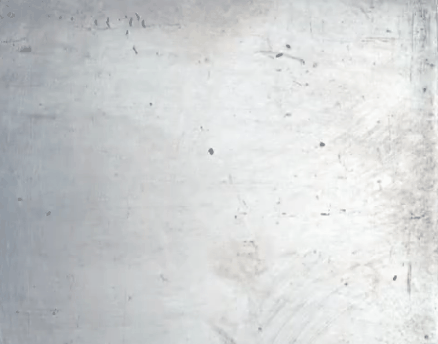
Figure 1: A frame from the exemplar time-lapse of a rusting steel plate. The source video covers the full progression from clean metal to heavy corrosion.
Warm-up phase: from noise to steel
The synthesis output captures the warm-up phase — how the ODE transforms random Gaussian noise into a valid initial texture:
| Frame 0 (pure noise) | Frame 10 | Frame 25 | Frame 40 | Frame 49 (end of warm-up) |
|---|---|---|---|---|
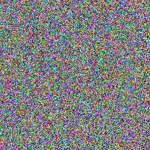 |
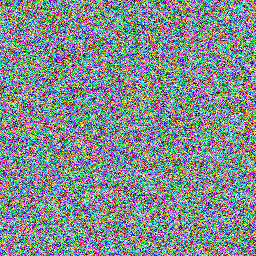 |
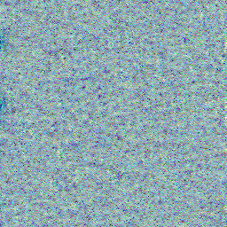 |
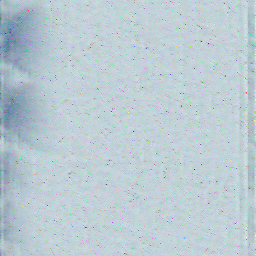 |
 |
Figure 2: The warm-up (denoising) phase. The ODE organizes random noise into a coherent metallic texture over 50 steps. By frame ~25, colour noise is mostly suppressed and a faint metallic structure begins to appear. By frame 49, a clean steel texture is ready for generation.
The warm-up matters because the same ODE weights that later produce rusting also create the initial clean metal from noise. This dual capability — denoising and temporal evolution — learned by a single model is one of the paper's main contributions.
Generation phase: steel ages before your eyes
The transition output is the main result — the ODE driving the texture through a rusting process:
| Frame 0 (clean steel) | Frame 25 | Frame 50 | Frame 75 | Frame 99 (heavy rust) |
|---|---|---|---|---|
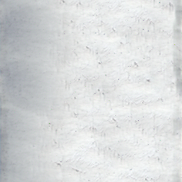 |
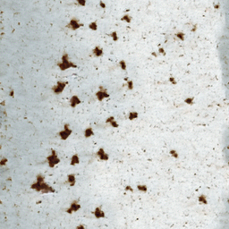 |
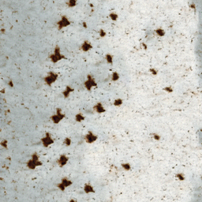 |
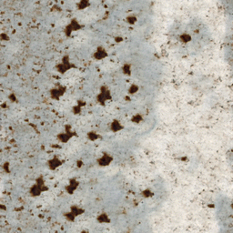 |
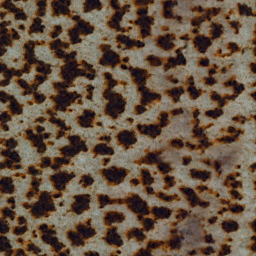 |
Figure 3: Generation phase. Small brown spots appear sparsely (frame 25), grow and multiply (frame 50), begin merging (frame 75), and form extensive corrosion by frame 99. The evolution is temporally smooth — no spots teleport or flicker.
A few things to note. Rust spots grow continuously from small nucleation points, which mirrors real corrosion where oxidation starts at surface defects and spreads outward. The background drifts from silvery-white to beige. Early frames show isolated spots; later frames show merged, interconnected corrosion — consistent with the real physics of rust formation.
Side-by-side comparison
The comparison frames place our ODE-generated texture alongside the original exemplar at corresponding time points:
Frame 50
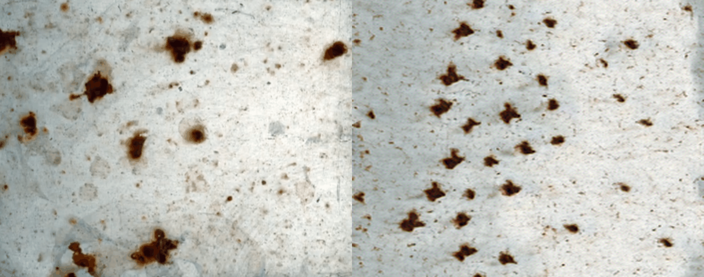
Frame 99
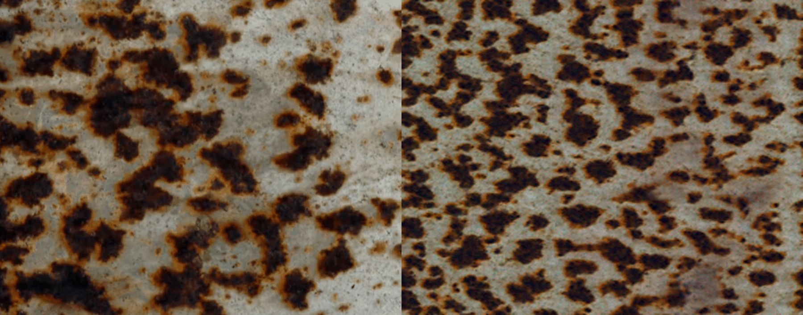
Figure 4: Exemplar (upper) vs. synthesized output (lower) at two time points. The synthesized textures match the statistical properties — colour distribution, spot density, coverage ratio — while having different spatial arrangements, confirming generative diversity.
The synthesized texture is intentionally different from the exemplar in spatial layout. The Gram/SWD loss matches statistics (colour histograms, feature correlations, spot size distributions), not pixel-level correspondence. The model is generative: it can produce many diverse rusting patterns that share the same statistical progression as the original.
Cross-material results
We also ran our simplified model on four additional exemplars from the paper's dataset. The results expose both strengths and clear limitations of our architectural choices.
Bacteria growth. The model gets the warm pinkish-beige palette of bacterial colonies right, and temporal densification — sparse early, denser later — matches real growth patterns. But distinct circular colony boundaries visible under a microscope are lost; generated frames blend more continuously without sharp outlines.
Cracking clay. Elongated darker regions cut through frames, and there is distinguishable colour zoning between intact clay and crack lines. The patterns do evolve over time. But generated cracks are softer and more diffuse than the originals — the sharp branching geometry of real clay cracks, where you can trace a line end-to-end, dissolves before completing.
Grassroots expansion. The colour identity is accurate, with fine filament-like streaks that suggest fibrous roots. The generated version carries a subtle vertical directional bias matching real root growth, and density increases over time. But individual traceable root strands are lost — they merge into a diffuse green haze rather than remaining discrete threads.
Sprouting seeds. The green-brown palette matches well, and the brightness progression — darker early, brighter and greener later — mirrors a real sprout emerging from soil. The soft, organic texture quality suits the subject. But no defined stem or leaf shapes emerge; the boundary between soil and sprout stays blurred.
Bacteria growth

Cracking clay

Grassroots expansion

Sprouting seeds
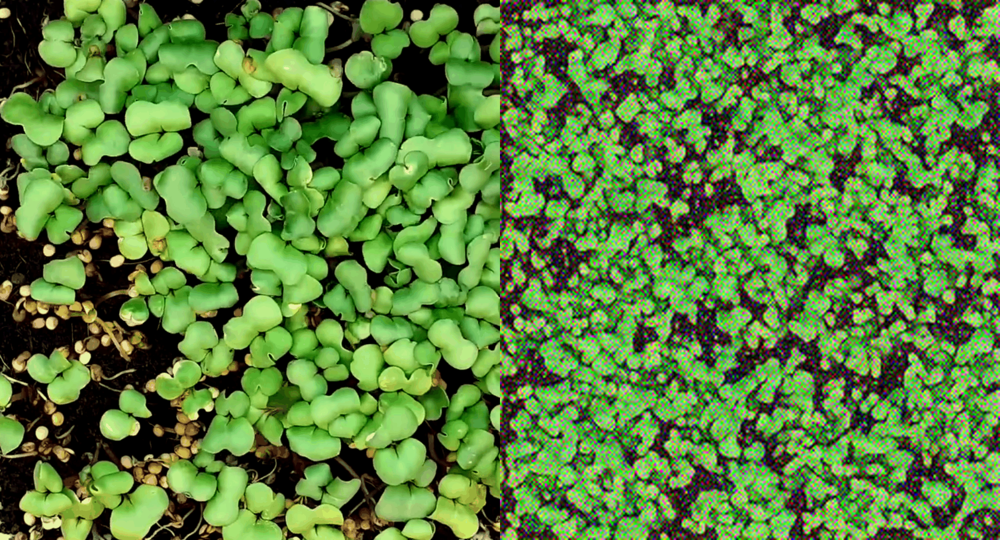
Cross-material results at frame 050. Each image shows the exemplar (left half) alongside the synthesized output (right half). From top to bottom: Bacteria growth, Cracking clay, Grassroots expansion, Sprouting seeds.
Why do some materials work better than others?
A pattern emerges across these five experiments, tied to our model design.
Statistical losses are spatial-layout-blind. Our Gram matrix loss and SWD, both computed on VGG-19 features, are statistical losses. They match the overall distribution of textures and colours — what features are present and in what proportions — but are mostly indifferent to where those features sit. This explains why the model gets palette and texture identity right (grassroots, sprouts, and rust all look unmistakably like their subject matter) while consistently struggling with sharp structural boundaries. A crack running diagonally contributes the same Gram statistics whether it is correctly placed or smeared across the whole image.
Stationary vs. non-stationary textures. Grassroots, sprouts, and rust are near-stationary textures — the visual character is roughly uniform everywhere, with no strong foreground/background distinction. Gram/SWD losses are designed for this regime, which is why they work well here. Cracking clay is the outlier: cracks are sparse, linear, high-contrast features embedded in a uniform background. Capturing that requires getting specific spatial structure right, not just the statistical mixture. Bacteria sits between the two extremes, which matches its middling quality.
Limited receptive field from the 2-level UNet. With only two downsampling stages, the ODE function's receptive field is relatively small — it sees local patches well but cannot build a strong global picture. Even if the loss demanded correct crack placement, the architecture might lack the spatial reasoning to deliver it. The original 3-level UNet gives access to coarser, more global feature maps that support long-range structural coherence — important for crack propagation spanning the whole frame, less so for homogeneous textures like rust blooms.
Quantitative perspective
The paper reports quantitative metrics averaged across all 22 RGB exemplars. Below are the numbers from Table 1:
| Method | Gram ↓ | SWD ↓ | Non-Straightness ↓ |
|---|---|---|---|
| Gatys (frame-wise) | 0.005 | 0.013 | 2.050 |
| Two-stream | 0.006 | 0.015 | 1.777 |
| DyNCA | 3.216 | 1.924 | 1.499 |
| SinFusion | 4.372 | 1.900 | 1.749 |
| NDAE [1] | 0.042 | 0.050 | 0.720 |
| Exemplar (reference) | — | — | 1.531 |
Table 1: Quantitative comparison from the paper. Lower is better for all metrics.
There is an interesting trade-off here:
Realism (Gram, SWD): Frame-wise methods like Gatys achieve the best per-frame texture quality because each frame is independently optimized. NDAE is slightly behind but still competitive.
Temporal coherence (Non-Straightness): NDAE achieves 0.720, well below all other methods — and below the exemplar itself (1.531). The ODE's continuous dynamics smooth out the capturing artifacts (flashes, jitter) present in the real video, producing a more coherent trajectory through perceptual space than the ground truth.
This is the most noteworthy result in the table: the learned ODE produces smoother temporal evolution than reality, because the mathematical structure of an ODE inherently prevents discontinuous jumps.
What we learned
First, the warm-up phase is not optional. Without it, there is no mechanism to go from noise to a meaningful initial state. That a single ODE handles both denoising and temporal evolution is a clean design.
Second, Neural ODEs enforce temporal smoothness by construction. Because the state evolves continuously, sudden jumps or flickering between frames cannot happen. This is a structural prior that frame-by-frame methods lack.
Third, texture statistics are a reasonable supervision signal. Gram/SWD loss lets the model generate new spatial arrangements while matching the statistical properties of each time step. This is both a feature (diversity) and a limitation (some spatial structures may not be preserved).
Fourth, the online training scheme is necessary for tractability. Running the full ODE integration every iteration would be prohibitively slow. The stratified segment-based approach makes training feasible on a single GPU.
Limitations and open questions
The ODE discovers latent dynamics purely from visual data. It does not model the actual chemistry of corrosion or biology of decay. Whether the learned latent space corresponds to meaningful physical quantities is an open question.
Each exemplar requires training a separate model from scratch. A universal model that generalizes across materials would be more useful but is considerably harder to build.
Training at 128×128 is practical, but scaling to higher resolutions increases ODE integration cost quadratically. The authors note that arbitrary-size synthesis is possible at inference time, but training remains resolution-constrained.
The method assumes uniform statistics across space. Materials with spatially localized processes (e.g., rust preferentially forming at edges) may not be well captured.
Conclusion
Neural Differential Appearance Equations formulate material aging as a Neural ODE and make the entire pipeline — from noise to appearance — differentiable. The method discovers "equations of aging" purely from video data. The learned ODE produces temporally coherent, visually plausible dynamic textures that outperform prior methods on materials with genuine appearance changes.
For EE5311 students, NDAE illustrates how differential equations, differentiable simulation, and physics-guided learning can be combined to solve problems in computer graphics. Our rusting steel reproduction shows the idea in action: from random noise, a single learned ODE produces a smooth, realistic portrayal of metal aging over time.
References
- [1] C. Liu and T. Ritschel, "Neural Differential Appearance Equations," ACM Trans. Graph., 2024. arXiv:2410.07128.
- [2] L. Gatys, A. Ecker, and M. Bethge, "Texture Synthesis Using Convolutional Neural Networks," NeurIPS, 2015.
- [3] T. Tesfaldet, M. Brubaker, and K. Derpanis, "Two-Stream Convolutional Networks for Dynamic Texture Synthesis," CVPR, 2018.
- [4] R. T. Q. Chen, Y. Rubanova, J. Bettencourt, and D. Duvenaud, "Neural Ordinary Differential Equations," NeurIPS, 2018.
- [5] E. Pajouheshgar, Y. Xu, T. Zhang, and S. Süsstrunk, "DyNCA: Real-time Dynamic Texture Synthesis Using Neural Cellular Automata," CVPR, 2023.
- [6] A. M. Turing, "The Chemical Basis of Morphogenesis," Phil. Trans. R. Soc. Lond. B, 1952.
- [7] Y. Nikankin, N. Haim, and M. Irani, "SinFusion: Training Diffusion Models on a Single Image or Video," ICML, 2023.
- [8] P. Dhariwal and A. Nichol, "Diffusion Models Beat GANs on Image Synthesis," NeurIPS, 2021.
Contributions
- [Member A]: Literature review, paper analysis, wrote the Introduction and Background sections, proofread final draft.
- [Member B]: Implemented the reproduction pipeline, ran the rusting steel experiment, produced all synthesis outputs.
- [Member C]: Wrote the Core Idea and Training Algorithm sections, created diagrams and mathematical formulations.
- [Member D]: Wrote the Results, Limitations, and Conclusion sections, coordinated team efforts.
All members contributed to research discussions and review of the blog article.